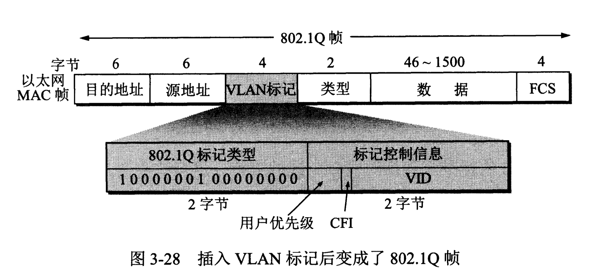

计算机网络/数据链路层/扩展的以太网 # 在物理层扩展以太网 扩展主机的集线器之间的距离的一种简单方法就是使用光纤和一对光纤调制解调器。光纤调制解调器的作用就是进行电信号和光信号的转换。由于光纤带来的时延很小，并且带宽很宽，因此使用这种方法可以很容易地使主机和几公里以外的集线器相连接。 如果使用多个集线器，就可以连接成覆盖更大范围的多级星形结构的以太网。 但这种多级结构的集线器以太网也带来了一些缺点： 1. 碰撞域增大。 2. 不同以太网兼容成本大。
在数据链路层扩展以太网
以太网交换机的特点
- 交换机实质上就是一个多接口的网桥，通常都有十几个或更多的接口，和工作在物理层的转发器、集线器有很大的差别。以太网交换机的每个接口都直接与一个单台主机或另一个以太网交换机相连，并且一般都工作在全双工方式。以太网交换机还具有并行性，即能同时连通多对接口，使多对主机能同时通信。相互通信的主机都是独占传输媒体，无碰撞地传输数据。
- 以太网交换机的接口还有存储器，能在输出端口繁忙时把到来的帧进行缓存。
- 以太网交换机是一种即插即用设备，其内部的帧交换表是通过自学习算法自动地逐渐建立起来的。
- 以太网交换机的性能远远超过普通的集线器，而且价格并不贵，这就使工作在物理层的集线器逐渐地退出了市场。
虚拟局域网
虚拟局域网VLAN(Virtual LAN)是由一些局域网网段构成的与物理位置无关的逻辑组，而这些网段具有某些共同的需求。每一个VLAN的帧都有一个明确的标识符，指明发送这个帧的计算机属于哪一个局域网。 由于虚拟局域网是用户和网络资源的逻辑组合，因此可按照需要将有关设备和资源非常方便地组合，使用户从不同的服务器或数据库中存取所需的资源。 虚拟局域网协议允许在以太网的帧格式中插入一个4字节的标识符，称为VLAN标记(tag)，用来指明发送该帧的计算机属于哪一个虚拟局域网。

当数据链路层检测到MAC帧的源地址字段后面的两个字节的值是0x8100时，即知道现在插入了4字节的VLAN标记。于是就接着检查后面两个字节的内容。在后面的两个字节中，前3位是用户优先级字段，接着的一位是规范格式指示符CFI(Canonical Format Indicator)，最后的12位是该虚拟局域网VLAN标识符VID(VLAN ID)，它唯一地标志了这个以太网帧属于哪一个VLAN。
参考文献：《计算机网络（第7版）》谢希仁著。